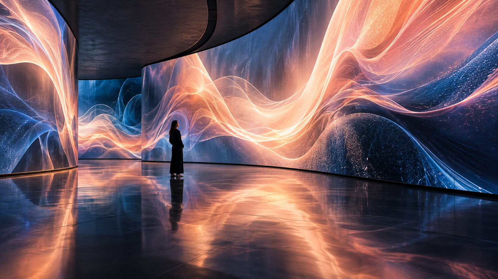
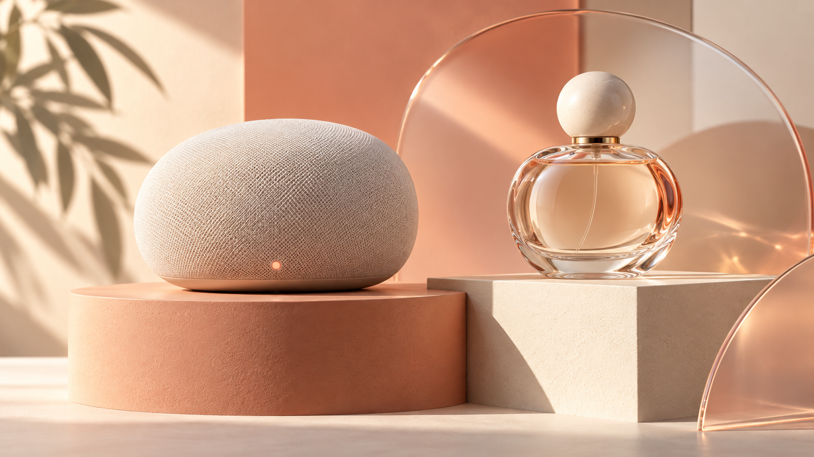

함께 진화할
다음 얼굴을 찾습니다.
루온과 함께 세상을 움직일 사람을 찾고 있어요. 변화하는 기술 환경 속에서 함께 배우고, 만들고, 성장할 동료를 기다립니다.
좋아하는 일을 더 잘 할 수 있게 하는 힘, 루온에는 있습니다.
온보딩 프로그램
출근 첫 날 계약서를 작성하고, 루온 문화와 내규를 안내하는 신규 입사자 OJT 교육을 진행합니다.
루온 메이트
우리는 모두 크리에이티브 몬스터. 새로운 환경에 빠르게 적응할 수 있도록 곁에서 도움을 주는 동료가 있습니다.
커피 무한 제공
루온빌딩 1층부터 3층까지 층마다 스튜디오 커피머신이 있어 언제든 카페인 충전을 할 수 있습니다.
루온데이
루온데이가 있어 기다려지는 수요일! 여유 있는 휴식 시간이 될 수 있도록 수요일 점심시간을 2시간 제공합니다.
출퇴근 유연제
오전 8시~10시까지 유연하게 출근하고, 오후 5시 이후부터 자유롭게 퇴근하는 출퇴근 유연제를 운영 중입니다.
세미나 비용 지원
개인의 성장이 곧 루온의 성장! 트렌드를 익히고 견문을 넓히기 위한 세미나 참가비를 지원합니다.
도서 구입 지원
성장에 필요한 지식 충전을 위한 책, 루온 라이브러리에 준비되어 있습니다.
경조사 지원
경조사 발생 시 경조사비, 경조휴가, 화환 등을 제공해 마음을 전합니다.
루온 이벤트
여름엔 몸보신, 겨울엔 마음 보신. 소소한 즐거움과 기쁨을 더하기 위해 계절 이벤트를 진행합니다.
명절 선물
설날과 추석, 백화점 상품권을 지급해 풍요로운 명절과 감사한 마음을 전합니다.
고성능 장비 지원
업무 능력을 마음껏 펼칠 수 있도록 고성능 하드웨어와 최신 소프트웨어를 제공합니다.
회식비
그룹별 활동으로 친목을 도모하고 팀워크를 높이기 위해 정기적으로 회식비를 제공합니다.
리프레시 휴가
강도 높은 업무 수행 후 쉬면서 재충전할 수 있도록 리프레시 휴가를 제공합니다.
자유로운 휴가
정기휴가를 개인 스케줄과 컨디션에 맞게 반반차·반차·연차 형태로 자유롭게 사용할 수 있습니다.
생일자 혜택
생일자에게는 생일 축하금과 함께, 당일 2시간 일찍 퇴근할 수 있는 조기퇴근권을 선물합니다.
위너카드
제안 프로젝트 수주 시 '위너카드'라는 이름으로 포상금을 지급합니다.
장기근속 포상
3년부터 20년까지, 루온의 역사를 함께 만들어가는 장기 근속자에게 포상금과 포상휴가를 지급합니다.
같은 방향을 향해 함께 갈
당신을 기다립니다.
인재풀 등록.
원하는 공고가 없으신가요? 인재풀로 상시 등록받습니다 — 등록하시면 적합한 포지션이 열릴 때 먼저 연락드립니다.
크루 이야기 남기기 →우리와 함께하기 위한
여정이에요.
서류전형
1차 인터뷰
그룹의 리더와 인사부서가 참석해 직무 전문성과 역량을 검증
2차 인터뷰
임원과 인사부서가 참석해 인재상과 조직 적합도를 심층적으로 검증
처우 협의
최종 합격 안내와 함께 합격자의 입사일과 처우를 협의
입사 확정
입사 안내
입사 확정 후 제출 서류와 필요 정보를 메일로 안내
- 루온 스튜디오는 성별·국적·종교·연령·장애 여부 등 지원자에 대한 불합리한 차별을 하지 않습니다.
- 모든 채용 절차는 근로기준법 및 관련 법규, 자사 취업규칙에 따라 진행됩니다.
- 포지션에 따라 코딩 테스트 등 과제 전형이 추가될 수 있습니다.
- 인터뷰 결과는 합격·불합격 여부와 상관없이 일주일 내 통보합니다.
- 서류 전형은 합격자에 한해 인터뷰 요청 및 일정을 조율합니다.
- 위는 루온 스튜디오의 기본 프로세스이며, 포지션에 따라 인터뷰 절차가 간소화될 수 있습니다.
자주 묻는 질문을
모아봤어요.
서류 심사 기준은 어떻게 되나요?
지원자 님이 가지고 계신 능력이 루온에서 최대한 발휘될 수 있는지, 또 지원자 님의 경험과 루온이 기대하는 역할이 일치하는지 신중하게 검토합니다.
채용 절차는 어떻게 되나요?
서류 검토 후 합격자에 한해 연락 드려 인터뷰를 요청합니다. 인터뷰 수락 시 일정을 조율하고 장소를 안내합니다. 대면 인터뷰는 포지션에 따라 2차까지 진행될 수 있으며, 결과는 최대 일주일 내 연락 드립니다. 입사 의사가 있을 경우 처우 협의가 진행됩니다.
지원 시 유의사항이 있나요?
수행하고 싶은 직무와 관련된 능력을 꼼꼼하게 작성한 서류를 제출해주세요. 허위 작성 사실이 발견될 경우 채용이 중단되거나 취소될 수 있습니다. 주민등록번호 등 예민한 개인정보는 꼭 제외해주세요.
다수 포지션으로 중복 지원도 가능한가요?
중복 지원에 대한 제한은 없습니다. 다만 서류 검토 후 지원자 님에게 가장 핏한 포지션을 역으로 제안 드릴 수 있다는 점 참고해주세요.
불합격한 이력이 있어도 재지원이 가능한가요?
지원 횟수에 대한 제한은 없습니다. 제출 서류를 업데이트해서 지원해주신다면 참고해 열심히 검토하겠습니다.
정해진 인터뷰 복장 규정이 있나요?
루온은 지원자의 개성과 취향을 존중합니다. 편안하게 인터뷰에 임할 수 있는 최적의 복장을 갖추고 오시면 됩니다.
인터뷰는 어떻게 진행되나요?
인터뷰는 대면으로 진행되며, 실무 역량과 함께 루온 내부 문화 적합성을 함께 검토합니다. 시간은 약 30분~1시간이며, 1차는 실무진과 인사담당자, 2차는 임원진과 인사담당자가 면접관으로 참여합니다. 미처 제출하지 못한 서류가 있다면 챙겨 오셔서 어필하셔도 됩니다.
합격 이후 프로세스는 어떻게 진행되나요?
인터뷰 합격 시 인사담당자가 문자로 합격을 통보하고 처우 협의를 위한 조건을 제안합니다. 지원자 님이 입사를 희망하고 입사일·조건 협의가 완료되면 메일로 오퍼레터를 발송합니다.


